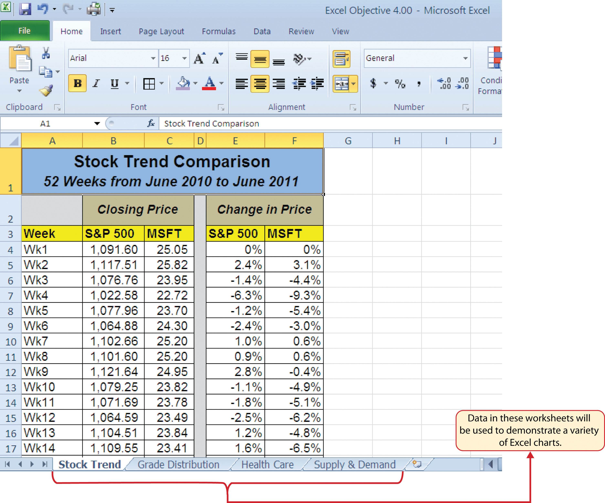
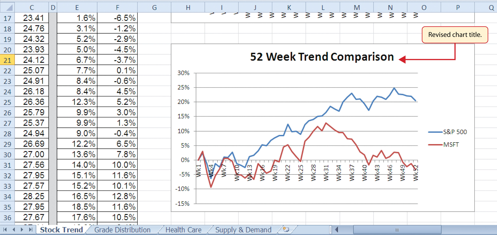
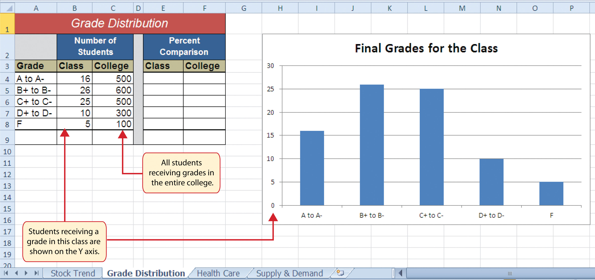
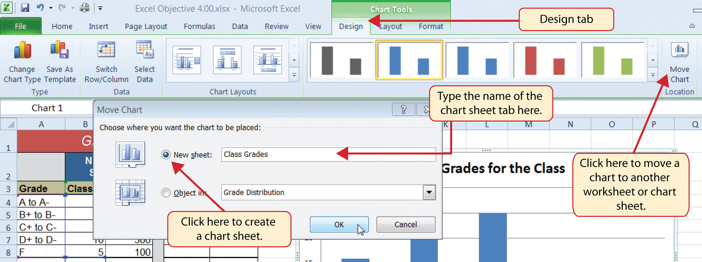
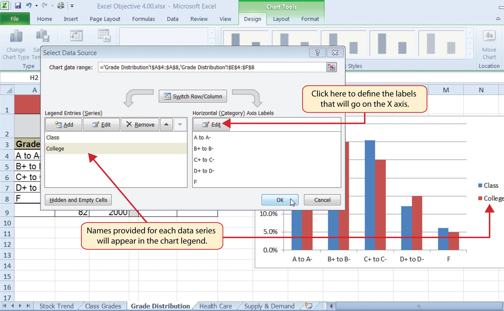
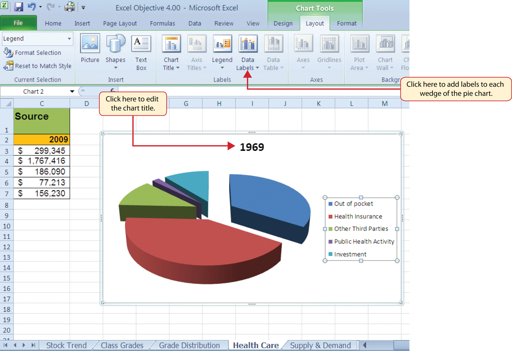
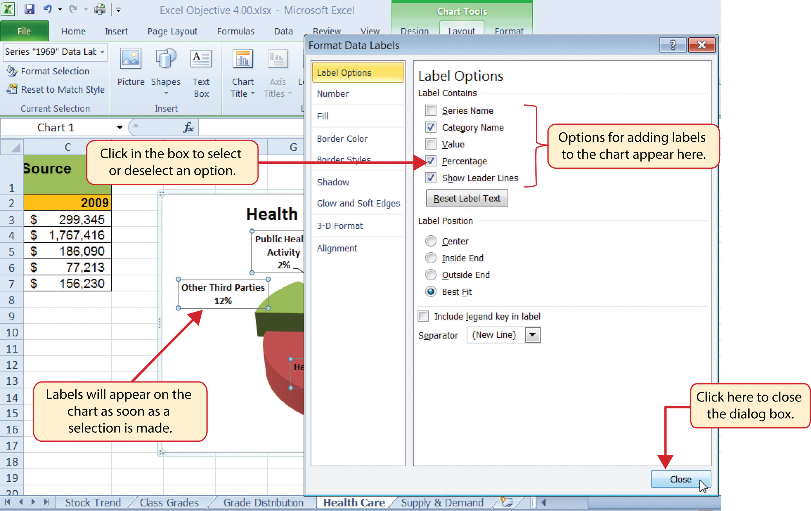
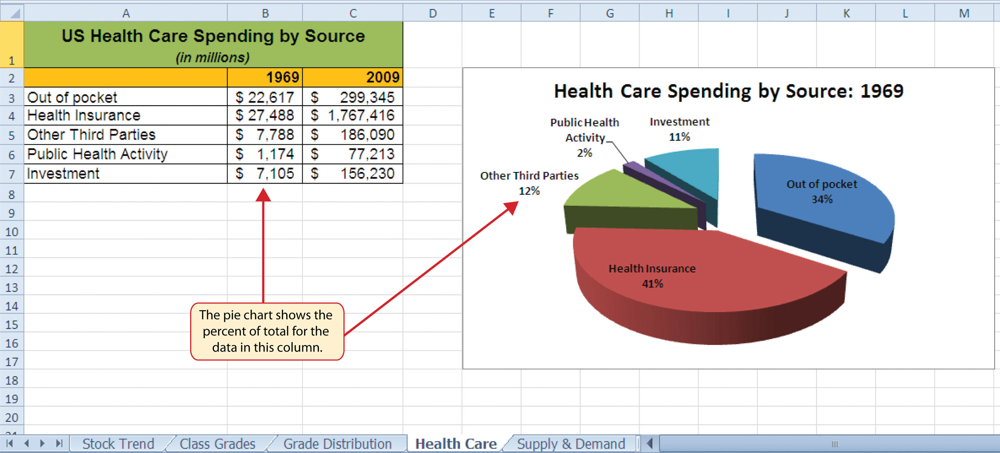
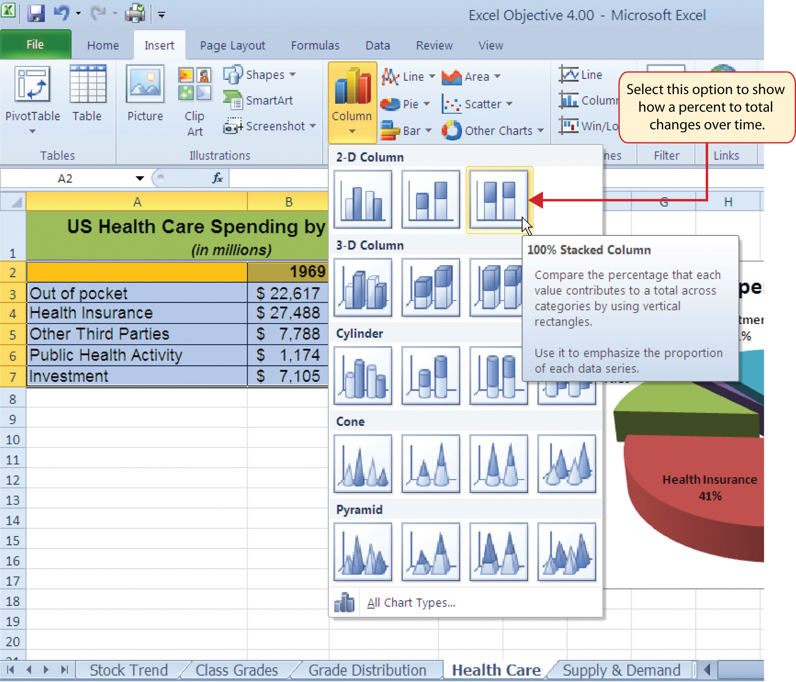

This section reviews the most commonly used Excel chart types. To demonstrate the variety of chart types available in Excel, it is necessary to use a variety of data sets. Therefore, instead of addressing a specific theme, we will use a variety of themes. This is necessary not only to demonstrate the construction of charts but also to explain how to choose the right type of chart given your data and the idea you intend to communicate.
Before we begin, let’s review a few key points you need to consider before creating any chart in Excel. The first is identifying your idea or message. It is important to keep in mind that the primary purpose of a chart is to present quantitative information to an audience. Therefore, you must first decide what message or idea you wish to present. This is critical in helping you select specific data from a worksheet that will be used in a chart. Throughout this chapter, we will reinforce the intended message first before creating each chart.
The second key point is selecting the right chart type. The chart type you select will depend on the data you have and the message you intend to communicate.
The third key point is identifying the values that should appear on the X and Y axes. One of the ways to identify which values belong on the X and Y axes is to sketch the chart on paper first. If you can visualize what your chart is supposed to look like, you will have an easier time using Excel to construct an effective chart that accurately communicates your message. Table 4.1 "Key Steps before Constructing an Excel Chart" provides a brief summary of these points.
Carefully Select Data When Creating a Chart
Just because you have data in a worksheet does not mean it must all be placed onto a chart. When creating a chart, it is common for only specific data points to be used. To determine what data should be used when creating a chart, you must first identify the message or idea that you want to communicate to an audience.
Table 4.1 Key Steps before Constructing an Excel Chart
| Step | Description |
|---|---|
| 1. Define your message. | Identify the main idea you are trying to communicate to an audience. If there is no main point or important message that can be revealed by a chart, you might want to question the necessity of creating a chart. |
| 2. Identify the data you need. | Once you have a clear message, identify the data on a worksheet that you will need to construct a chart. In some cases, you may need to create formulas or consolidate items into broader categories. |
| 3. Select a chart type. | The type of chart you select will depend on the message you are communicating and the data you are using. |
| 4. Identify the values for the X and Y axes. | After you have selected a chart type, you may find that drawing a sketch is helpful in identifying which values should be on the X and Y axes. (The X axis is horizontal, and the Y axis is vertical.) |
Follow-along file: Excel Objective 4.00
The first chart we will demonstrate is a line chart. Figure 4.1 "52 Week Data for the S&P 500 and Microsoft" shows part of the data that will be used to create two line charts. The first line chart will show the trend of the S&P 500An aggregate price index for five hundred of the largest publicly traded US companies. stock index. This is an aggregate price index of five hundred of the largest publicly traded companies. This chart will be used to communicate a simple message: to show how the index has performed over a fifty-two-week period. We can use this chart in a presentation to show whether stock prices have been increasing, decreasing, or remaining constant over the designated period of time.
Figure 4.1 52 Week Data for the S&P 500 and Microsoft
Before we create the line chart, it is important to identify why it is an appropriate chart type given the message we wish to communicate and the data we have. When presenting the trend for any data over a designated period of time, the most commonly used chart types are the line chart and the column chart. With the column chart, you are limited to a certain number of bars or data points. As you increase the number of bars on a column chart, it becomes increasingly difficult to read. As you scroll through the data on the worksheet shown in Figure 4.1 "52 Week Data for the S&P 500 and Microsoft", you will see that there are fifty-two points of data used to construct the chart. This is generally too many data points to put on a column chart, which is why we are using a line chart. Our line chart will show the closing price for the S&P 500 on the Y axisThe vertical axis of a chart. and the week number on the X axisThe horizontal axis of a chart.. The following steps explain how to construct this chart:
Figure 4.2 Selecting the Basic Line Chart

Line Chart vs. Column Chart
We can use both a line chart and a column chart to illustrate a trend over time. However, a line chart is far more effective when there are many periods of time being measured. For example, if we are measuring fifty-two weeks, a column chart would require fifty-two bars. A general rule of thumb is to use a column chart when twenty bars or less are required. A column chart becomes difficult to read as the number of bars exceeds twenty.
Figure 4.3 "Embedded Line Chart in the Stock Trend Worksheet" shows the embedded line chart in the Stock Trend worksheet. Notice that three additional tabs, or contextual tabsHidden tabs on the Ribbon that contain commands related to a specific object. Contextual tabs become visible when the related object is added or activated., are added to the Ribbon. We will demonstrate the commands in these tabs throughout this chapter. These tabs appear only when the chart is activated.
Figure 4.3 Embedded Line Chart in the Stock Trend Worksheet

As shown in Figure 4.3 "Embedded Line Chart in the Stock Trend Worksheet", the embedded chartAny chart that is created and placed within a worksheet. is not placed in an ideal location on the worksheet since it is covering several cell locations that contain data. The following steps demonstrate common adjustments that are made when working with embedded charts:
Figure 4.4 "Line Chart Moved and Resized" shows the line chart after it is moved and resized. You can also see that the title of the chart has been edited to read 52 Week Trend for the S&P 500. Also notice that the sizing handles do not appear around the perimeter of the chart. This is because the chart has been deactivated. To activate the chart, click anywhere inside the chart perimeter.
Figure 4.4 Line Chart Moved and Resized

The X Axes on Line Charts Use Labels, Not Values
When using line charts in Excel, keep in mind that anything placed on the X axis is considered a descriptive label, not a numeric value. This is important because there will never be a change in the spacing of any items placed on the X axis of a line chart. If you need to create a line chart using numeric data on the X axis, you must use a scatter chart type.
Follow-along file: Continue with Excel Objective 4.00. (Use file Excel Objective 4.01 if starting here.)
After creating an Excel chart, you may find it necessary to adjust the scale of the Y axis. Excel automatically sets the maximum value for the Y axis based on the data used to create the chart. However, the minimum value is usually set to zero. Depending on the data you are using to create the chart, setting the minimum value to zero can substantially minimize the graphical presentation of a trend. For example, the trend shown in Figure 4.4 "Line Chart Moved and Resized" appears to be increasing slightly. However, the S&P 500 increased by over 20% during this period, which is substantial. The presentation of this trend can be improved if the minimum value started at eight hundred. While it is certainly possible for the S&P 500 to fall below eight hundred, it is most likely remote. The following steps explain how to make this adjustment to the Y axis:
Click the Format Selection button in the Current Selection group of commands (see Figure 4.5 "Format Axis Dialog Box"). This opens the Format Axis dialog box.
Figure 4.5 Format Axis Dialog Box

Figure 4.6 "Adjusted Y Axis for the S&P 500 Chart" shows the change in the presentation of the trendline. Notice that with the Y axis starting at 800, the trend for the S&P 500 is more pronounced and reflects the substantial increase over the 52-week period. This adjustment makes it easier for the audience to see the magnitude of the trend.
Figure 4.6 Adjusted Y Axis for the S&P 500 Chart

Follow-along file: Continue with Excel Objective 4.00. (Use file Excel Objective 4.02 if starting here.)
We will now create a second line chart using the data in the Stock Trend worksheet. The purpose of this chart is to compare two trends: the change in value for the S&P 500 and the Microsoft common stock. Chapter 3 "Logical and Lookup Functions" presented a personal investment portfolio where the investments were compared to a benchmark. The S&P 500 is a benchmark that is commonly used to judge the performance of individual stocks. The purpose and message of this chart is to show whether Microsoft is performing better or worse than the S&P 500 index. This type of analysis can be used to determine whether a stock should be sold, purchased, or held.
Before creating the chart to compare the S&P 500 and Microsoft, it is important to review the data in the range E4:F55 on the Stock Trend worksheet. We cannot use the price data for Microsoft and the S&P 500 because the values are not comparable. That is, the data for Microsoft is in a range of $22.00 to $28.00, but the data for the S&P 500 is in a range of 1,022 to 1,363. If we used these values to create a chart, we would not be able to see any substantial change in the trend for either the S&P 500 or Microsoft. Therefore, formulas were used to calculate the percent change in value for the S&P 500 and Microsoft for each week. For example, looking at cells E5 and F5 on the Stock Trend worksheet, you see that the S&P 500 increased 2.4% in week 2, whereas Microsoft increased 3.1%. The percent change calculations now provide an appropriate method of comparison. This is a very important step to consider when comparing trends.
The construction of this second line chart will be similar to the first line chart. The X axis will be the 52 weeks in the range A4:A55. However, the Y axis will be the percentages in the range E4:F55. This creates a problem because Columns B, C, and D will not be used in this chart. Therefore, we cannot simply highlight one contiguous range of cells to create the chart. In this chapter we will demonstrate two options for charting data that is not in a contiguous range. The following steps demonstrate the first option:
Click the first option from the list, which is a basic line chart.
Figure 4.7 "Trend Comparison Line Chart" shows the appearance of the line chart comparing the S&P 500 and Microsoft before it is moved and resized. Notice that Excel does not add a title to the chart.
Figure 4.7 Trend Comparison Line Chart

Figure 4.8 Adding a Title to a Chart

Figure 4.9 "Final Trend Comparison Line Chart" shows that Microsoft has not performed as well as the S&P 500 benchmark. From week 31 to week 52, Microsoft is showing a significant decline compared to the S&P 500, which continues to grow. What makes this chart effective is that an audience can quickly see how Microsoft compares with the S&P 500 over the 52-week period.
Figure 4.9 Final Trend Comparison Line Chart
Comparing Trends with Incompatible Values
When creating a chart to compare the trends of two or more data series, the values for each data series must be compatible. In other words, the values for each data series must be within a reasonable range in order for an effective comparison to be made. If the variance between the values in your data series is never less than a multiple of 2 (i.e., 500 × 2 = 1000 or 1000 ÷ 2 = 500), calculate the percent change for each point in time on your worksheet. The percent change must be calculated with respect to the first data point for each series. Then create your chart using the percentages instead of the actual values for each data series.
Follow-along file: Continue with Excel Objective 4.00. (Use file Excel Objective 4.03 if starting here.)
A column chart is commonly used to show trends over time so long as the data are limited to approximately twenty points or less. For example, in Chapter 1 "Fundamental Skills" we showed a sales trend over a twelve-month period. Another common use for column charts is frequency distributions. A frequency distributionThe number of occurrences for an established set of categories. shows the number of occurrences by established categories. For example, a common frequency distribution used in most academic institutions is a grade distribution. A grade distribution shows the number of students that achieve each level of a typical grading scale (A, A−, B+, B, etc.). The Grade Distribution worksheet contains final grades for a hypothetical academic class. To show the grade frequency distribution, the numbers of students appear on the Y axis and the grade categories appear on the X axis. The following steps explain how to create this chart:
Figure 4.10 "Grade Frequency Distribution Chart" shows the completed grade frequency distribution chart. By looking at the chart, you can immediately see that the greatest number of students earned a final grade in the B+ to B− or the C+ to C− categories.
Figure 4.10 Grade Frequency Distribution Chart
Column Chart vs. Bar Chart
When using charts to show frequency distributions, the difference between a column chart and a bar chart is really a matter of preference. Both are very effective in showing frequency distributions. However, if you are showing a trend over a period of time, a column chart is preferred over a bar chart. This is because a period of time is typically shown horizontally, with the oldest date on the far left and the newest date on the far right. Therefore, the descriptive categories for the chart would have to fall on the X axis, which is the configuration of a column chart. On a bar chart, the descriptive categories are displayed vertically along the Y axis.
Follow-along file: Continue with Excel Objective 4.00. (Use file Excel Objective 4.04 if starting here.)
The charts we have created up to this point have been added to, or embedded in, an existing worksheet. Charts can also be placed in a dedicated worksheet called a chart sheetAn Excel worksheet that is designated for a chart.. It is called a chart sheet because it can contain only an Excel chart. Chart sheets are useful if you need to create several charts using the data in a single worksheet. If you embed several charts in one worksheet, it can be cumbersome to navigate and browse through the charts. It is easier to browse through charts when they are moved to a chart sheet because a separate sheet tab is added to the workbook for each chart. The following steps explain how to move the grade frequency distribution chart to a dedicated chart sheet:
Figure 4.11 Moving a Chart to a Chart Sheet
Figure 4.12 "Chart Sheet Added to the Workbook" shows the Final Grades for the Class column chart in a separate chart sheet. Notice the new sheet tab added to the workbook matches the tab name entered into the Move Chart dialog box. Since the chart is moved to a separate chart sheet, it no longer is displayed in the Grade Distribution worksheet.
Figure 4.12 Chart Sheet Added to the Workbook

Follow-along file: Continue with Excel Objective 4.00. (Use file Excel Objective 4.05 if starting here.)
We will create a second column chart to show a comparison between two frequency distributions. Column C on the Grade Distribution worksheet contains data showing the number of students who received grades within each category for the entire college. We will use a column chart to compare the grade distribution for the class (Column B) with the overall grade distribution for the college (Column C). However, since the number of students in the class is significantly different from the total number of students in the college, we must calculate percentages in order to make an effective comparison. The following steps explain how to calculate the percentages:
Figure 4.13 Completed Grade Distribution Percentages

Figure 4.13 "Completed Grade Distribution Percentages" shows the completed percentages added to the Grade Distribution worksheet. The column chart uses the grade categories in the range A4:A8 on the X axis and the percentages in the range E4:F8 on the Y axis. Similar to the trend comparison line chart, this chart uses data that is not in a contiguous range. The following steps explain a second method for creating charts with data that is not in a contiguous range:
Click the OK button on the Edit Series dialog box.
Figure 4.14 Completed Data Series for the Class Grade Distribution

Click the OK button on the Select Data Source dialog box.
Figure 4.15 Final Settings for the Select Data Source Dialog Box
Figure 4.16 "Completed Grade Distribution Column Chart" shows the final appearance of the column chart. The column chart is an appropriate type for this data because there are fewer than twenty data points and we can easily see the comparison for each category. An audience can quickly see that the class issued fewer As compared to the college. However, the class had more Bs and Cs compared with the college population.
Figure 4.16 Completed Grade Distribution Column Chart

Too Many Bars on a Column Chart?
Although there is no specific limit for the number of bars you should use on a column chart, a general rule of thumb is twenty bars or less. Figure 4.17 "Poor Use of a Column Chart" contains a total of thirty-two bars. This is considered a poor use of a column chart because it is difficult to identify meaningful trends or comparisons. The data used to create this chart might be better used in two or three different column charts, each with a distinct idea or message.
Figure 4.17 Poor Use of a Column Chart

Follow-along file: Continue with Excel Objective 4.00. (Use file Excel Objective 4.06 if starting here.)
The next chart we will demonstrate is a pie chart. A pie chartA chart used to show the percent of total for each component of a data set. is used to show a percent of total for a data set at a specific point in time. The data we will use to demonstrate a pie chart is related to the overall spending activity in the health-care industry. The Health Care worksheet contains data that shows total spending in the United States for the years 1969 and 2009. In 1969, the total amount spent in the United States for health-related expenses was over $66 billion. The pie chart shows how this $66 billion was funded. The following steps explain how to accomplish this:
Resize the pie chart so the left side is locked to the left side of Column E, the right side is locked to the right side of Column M, the top is locked to the top of Row 2, and the bottom is locked to the bottom of Row 17 (see Figure 4.18 "Pie Chart Moved and Resized").
Figure 4.18 Pie Chart Moved and Resized
Click the Home tab of the Ribbon and then click the Bold button. This should bold the data labels on the pie chart.
Figure 4.19 Final Settings in the Format Data Labels Dialog Box
Figure 4.20 "Final Health Care Pie Chart" shows the completed pie chart. You can quickly see that Health Insurance and Out of Pocket made up the majority of health-care spending in 1969. Similar to the column chart, the key to creating an effective pie chart is the number of categories presented on the chart. Although there are no specific limits for the number of categories you can use on a pie chart, a good rule of thumb is ten or less. As the number of categories exceeds ten, it becomes more difficult to identify key categories that make up the majority of the total. In this example, it is easy to see that two categories compose 75% of the total.
Figure 4.20 Final Health Care Pie Chart
Follow-along file: Continue with Excel Objective 4.00. (Use file Excel Objective 4.07 if starting here.)
The last chart type we will demonstrate is the stacked column chartA chart used to show how a percent of total changes over time or between two or more entities.. We use a stacked column chart to show how a percent of total changes over time. For example, the data on the Health Care worksheet shows spending by source for 1969 and 2009. A stacked column chart can show whether there is any change in the percent of total for each source between the two years. The Y axis of the chart shows the percentage from 0% to 100%. The X axis shows the two years: 1969 and 2009. The following steps explain how to create this chart:
Click the Column button in the Charts group of commands. Select the 100% Stacked Column format option from the drop-down list (see Figure 4.21 "Selecting the 100% Stacked Column Format").
Figure 4.21 Selecting the 100% Stacked Column Format
Figure 4.22 "Initial Construction of the 100% Stacked Column Chart" shows the column chart that is created after selecting the 100% Stacked Column format option. As mentioned, the goal of this chart is to show the percentages on the Y axis and the years 1969 and 2009 on the X axis. However, notice that Excel places the spend sources on the X axis. The remaining steps explain how to correct this problem and complete the chart:
Figure 4.22 Initial Construction of the 100% Stacked Column Chart

Figure 4.23 "Final 100% Stacked Column Chart" shows the final stacked column chart. Notice that the Out of Pocket category, or the amount of cash people paid for health-care expenses, decreased significantly from 1969 to 2009. However, the Health Insurance category increased significantly from 1969 to 2009. Overall, the chart shows that the total out-of-pocket and health insurance expense increased significantly from 1969 to 2009. These two categories made up approximately 75% of total health-care spending in 1969. By 2009, these two categories increased to over 80% of total health-care spending.
Figure 4.23 Final 100% Stacked Column Chart

You need to create a chart showing the past year sales results for the university bookstore. Your chart will show the total sales by month for twelve months. Which of the following is the best chart type?
Which of the following should you do first to create an effective chart in Excel?
Which of the following is the most efficient method for adding labels to each section of a pie chart?
You have established a personal budget for your household. The spending section of the budget is broken down into five major categories. To show how the percent of total for each spend category has changed over a three-year period of time, it would be best to use which of the following chart types?